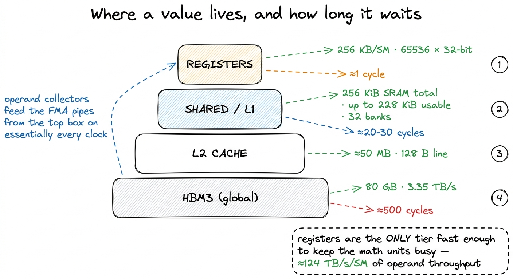
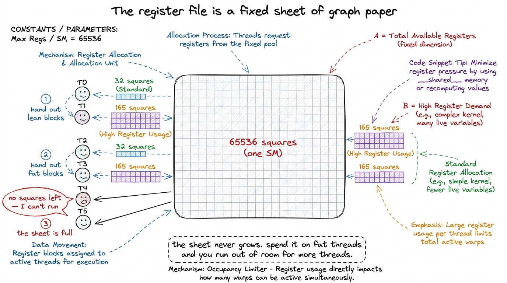
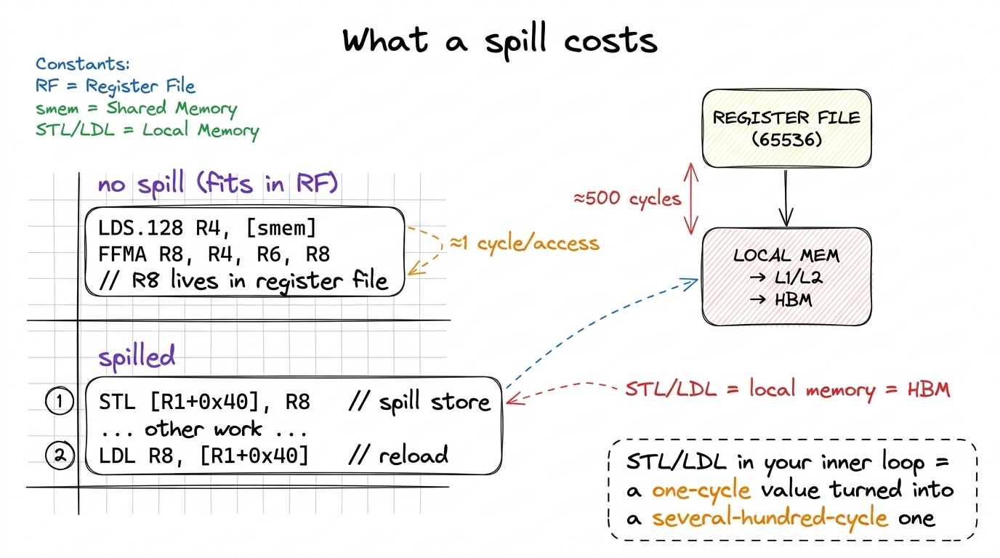

The register file RMEM
Every number a thread ever computes on — every partial sum, every loop index, every loaded operand on its way into a multiply — lives, for at least an instant, in a register. Registers are the fastest storage on the entire chip, the only memory that keeps pace with the math units, and they are also the scarcest resource you will fight over. Learning to spend them well is most of what separates a kernel that reaches 12.8% of cuBLAS from one that reaches 93.7%. This article is about the little pool of state at the very tip of the memory hierarchy, why it is so fast, and why having "too many" of the things you want most will quietly wreck your performance.
What the register file actually is
Each Streaming Multiprocessor (SM) on an H100 carries a register file (RF) of 256 KB — that is 65536 32-bit registers, packed into fast SRAM sitting directly beside the execution units. The register file is the primary store of bits in between their manipulation by the cores. It is built from a much faster memory technology than the L1 data cache — roughly an order of magnitude faster — because it has to feed the FMA pipes on essentially every clock without stalling them. The 32-bit register is the unit of allocation, but registers are dynamically typed by the instruction that reads them: two adjacent registers can be read as one 64-bit double, and a single register sliced into two half lanes or four FP8 values. When we say "255 registers", we always mean 255 of the 32-bit slots.
Two numbers tell you why registers matter. Latency: reading a register takes on the order of one clock cycle — there is essentially no wait between issuing an instruction and having its operands in hand. Compare that to shared memory (tens of cycles), L2 (a couple hundred), or HBM (roughly 500 cycles). Bandwidth: the register file on Hopper delivers something on the order of 124 TB/s of operand throughput per SM — a per-SM operand-collector figure, not a datasheet headline, but one that dwarfs even the 3.35 TB/s of aggregate HBM3 bandwidth for the whole 80 GB device. The register file is the only level of the hierarchy that can keep the FMA units genuinely saturated, which is exactly why every optimization on the GEMM ladder is, underneath, a scheme to get more work done out of registers before touching anything slower.

figure rendering · The register file sits at the tip of the pyramid: roughly 500× lower lRegisters are private — with one exception
A register belongs to exactly one thread. When your kernel declares float acc = 0.0f;, every thread in every warp in every block gets its own private acc, and no other thread can read or write it. This privacy is what makes registers a scalable resource: the SM does not arbitrate access the way it does for shared memory, so there are no cross-thread hazards to serialize. Each thread's registers are carved out of the same 65536-entry file, but the partition is fixed at launch and invisible to everyone else.
There is exactly one exception, and it is worth knowing precisely because it is the only one. Threads in the same warp can read each other's registers directly through the warp shuffle intrinsics — __shfl_sync, __shfl_down_sync, and friends.1 This is not a general "read any thread's register" mechanism — it is strictly within a warp of 32 lanes, and it goes through the register file's read ports, not shared memory. It is how a warp-level reduction or a broadcast happens in a couple of cycles without ever touching SMEM. Outside the warp, register privacy is absolute. A shuffle lets lane i grab the value held in a named register of lane j in the same warp, in a couple of cycles, without a round-trip through shared memory. This is the machinery behind fast warp reductions and broadcasts, and later on the ladder it is how a warp-tiled kernel shares operands among its 32 lanes cheaply. But note the fence: the shuffle is intra-warp only. Two threads in different warps — even in the same block — cannot see each other's registers at all; they must communicate through shared memory or global memory.
The tradeoff that decides everything: pressure vs. occupancy
Here is the tension at the heart of this article. Registers are fast, so you want to keep as much live data in them as possible — accumulators, cached operands, loop-carried values. But the register file is fixed: 65536 32-bit registers per SM, and every resident thread must be allocated its full quota out of that single pool. The more registers each thread demands, the fewer threads can live on the SM at once.
That quantity — how many warps are simultaneously resident relative to the hardware maximum — is occupancy, and it is the GPU's mechanism for hiding latency. When one warp stalls waiting on a memory load, the SM switches to another ready warp and keeps the pipes full. High occupancy means many warps to hide behind; low occupancy means stalls show through as idle cycles.
The arithmetic is unforgiving. Divide the file by per-thread usage: 65536 / regs_per_thread gives the ceiling on resident threads. At a lean 32 registers per thread you can host 65536 / 32 = 2048 threads — the full occupancy of a modern SM. At 128 registers you are down to 512 threads. And the hardware caps a single thread at 255 registers;2 255 is a hard architectural limit, not a suggestion — the register operand fields in the SASS encoding are simply not wide enough to name a 256th. If your kernel "wants" more live values than that, the compiler has no choice but to spill, no matter how much of the file is technically free. at that maximum a thread can host at most 65536 / 255 ≈ 256 threads on the SM, a small fraction of peak. Register pressure is exactly this — the register file becoming the bottleneck that throttles how many warps you can run.

figure rendering · Occupancy is register budget arithmetic. A fat per-thread footprint leYou feel this directly on the ladder. The 1D register tiling kernel earns its jump to 36.5% of cuBLAS precisely by having each thread accumulate several output elements in a small register array — float thread_results[TM] — instead of one, so the operands loaded from shared memory get reused across many FMAs before anything leaves the register file. Push it to 2D tiling (thread_results[TM * TN]) and each thread now owns an even bigger accumulator block; that is worth 68.7% of cuBLAS, and vectorizing the loads on top of it — float4 reads into reg_m[] and reg_n[] register fragments — carries us to 78.4%. Every one of those wins spends more registers per thread to buy arithmetic intensity. The art is spending just enough.
When you overspend: spilling to local memory
What happens when a thread genuinely needs more live values than it has registers — either because you asked for a huge accumulator tile or because you hit the 255 ceiling? The compiler does not fail. It spills: it picks some register-resident values and stores them to local memory, reloading them when they are next needed.
The name "local memory" is a trap. It is not on-chip and it is not local to anything fast — it is a per-thread private region that physically lives in global memory (HBM), cached through L1 and L2 on the way.3 "Local" refers to scope (private to one thread), not location. A spilled register is an HBM address. If the spill traffic fits in L1/L2 you pay cache latency; if it thrashes, you pay the full ~500-cycle HBM round trip on values you thought were one-cycle registers. Either way the profiler reports it as local memory load/store transactions — a red flag worth grepping for. So a spill converts a value you expected to read in one cycle into one that may cost hundreds.

figure rendering · A spill is visible in the SASS as STL/LDL instructions. Those are HBMYou can see both failure modes on the ladder at once in the warp tiling kernel, the one that ultimately reaches 93.7% of cuBLAS. Profiling an aggressive configuration of it shows about 165 registers per thread, which pins occupancy down near 18% — and the scheduler statistics confirm it, with roughly a third of cycles lost to "not selected" stalls: the SM simply runs out of ready warps to switch to.4 Low occupancy is not automatically fatal. A kernel with enough instruction-level parallelism within each thread — many independent FMAs in flight from a fat register tile — can saturate the math pipes at 18% occupancy, which is exactly how the warp-tiled kernel still hits 93.7%. The rule is "hide latency," not "maximize occupancy"; registers are one of the two levers (ILP is the other) and you trade them against each other. The winning configuration is the one that keeps every thread's tile just below the spill threshold while carrying enough independent accumulators to hide latency without a full warp bench — a balance you find by measuring, not by guessing.
Who actually hands out the registers: ptxas
You never allocate a physical register yourself. You write CUDA, which the front-end lowers to PTX — a virtual ISA with an unlimited supply of virtual registers, so at that stage register pressure does not exist. The real allocation happens one stage later, when ptxas, the assembler, translates PTX into SASS (the native machine ISA that actually runs).5 This is why nvcc -Xptxas -v prints "Used N registers, M bytes smem, K bytes spill stores" — that report is ptxas telling you the result of its allocation pass, after it has already decided what fits and what spills. PTX register counts are meaningless for occupancy; only the SASS number ptxas produces matters. It is ptxas that performs live-range analysis, decides which values stay resident, colors the register graph, and — when it runs out — inserts the spill and reload instructions.
Because ptxas owns this decision, the levers you have are indirect. __launch_bounds__(maxThreadsPerBlock, minBlocksPerSM) on a kernel tells ptxas your occupancy target, and it will cap register usage to hit it (spilling if it must). The blunter -maxrregcount=N (or -Xptxas --maxrregcount=N) forces a hard ceiling on registers per thread across the whole compilation unit. Both trade the same currency: cap registers lower and you raise the occupancy ceiling but risk spills; let registers run free and you avoid spills but may strand the SM at low occupancy. The right setting is workload-specific, which is why the top of the ladder involves an autotuning sweep — 84.8% of cuBLAS comes from letting a search find the tile sizes and launch bounds that land the register footprint in the sweet spot.
The one habit to build
When a kernel underperforms, compile with -Xptxas -v before you touch anything, and read three numbers: registers per thread, spill stores, and the occupancy the profiler reports. If you see nonzero spill stores, you have a value that thinks it is a one-cycle register but is really a 500-cycle HBM address — shrink the tile or the live set until they vanish. If you see zero spills but low occupancy and a pile of "not selected" scheduler stalls, ask whether your per-thread ILP is enough to justify the fat footprint, or whether a smaller tile with more resident warps would hide latency better.
That is the whole game at this level: the register file is fixed at 65536 slots, and every kernel is a negotiation over how to divide them between "more state per thread" and "more threads." Get the split right and the math units never wait. Get it wrong in either direction — too greedy and you spill, too timid and you starve the scheduler — and you leave most of the chip on the table. Next we drop one level down the pyramid to the resource you spend registers to avoid touching too often: shared memory, the on-chip scratchpad where a whole block, not just one thread, gets to share.